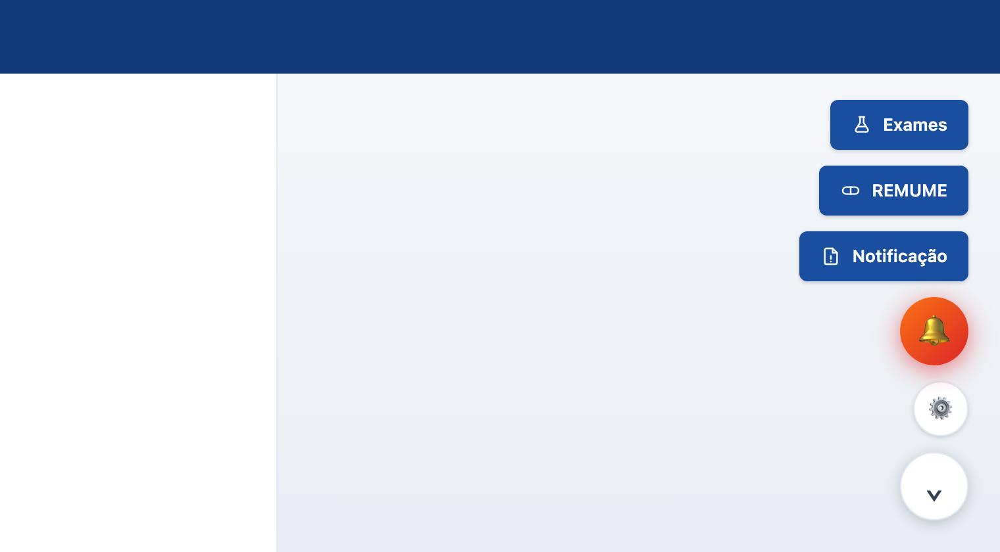

Passo a passo com imagens para instalar no Google Chrome ou no
Microsoft Edge. São quatro passos e leva uns cinco minutos.
⚠ Leia isto antes de começar. A parte que mais trava é o Passo 2:
liberar a opção “Permitir scripts de usuário” do Tampermonkey. Se ela
ficar desligada, tudo parece instalado e nada aparece na tela do Meeds —
sem nenhuma mensagem de erro. Por isso o Passo 2 tem três páginas só para ele.
Para quem é: médicos que vão usar o Assistente no computador (Windows, Mac ou Linux). iPad ou iPhone? O caminho é outro — peça o guia do iPad.
Atualizado em outubro de 2026.
ANTES DE COMEÇAR
O que você vai fazer
5 minutos
O Assistente Meeds funciona em duas peças. Pense assim: o
Tampermonkey é o aparelho de DVD e o Assistente é o filme. Você
instala o aparelho uma vez (Passos 1 e 2) e depois coloca o filme (Passo 3).
1Instalar o TampermonkeyUma extensão gratuita, da loja do próprio navegador.
2Liberar “Permitir scripts de usuário”Uma chave que vem desligada de fábrica.⚠ O passo que mais dá problema
3Instalar o AssistenteAbrir um endereço e clicar em Instalar.
4Conferir no MeedsOs botões aparecem no canto inferior direito.
Você precisa de
Um computador com Google Chrome ou Microsoft Edge (versão atual).
Seu login do Meeds à mão para o Passo 4.
Permissão para instalar extensões no computador. Em computador de clínica ou
hospital, o TI às vezes bloqueia — se a loja não deixar adicionar, é isso.
Já tem o Tampermonkey instalado?
Pule para o Passo 2 e confira a chave mesmo assim. Muita gente já tem a
extensão e nunca ligou a permissão.
É seguro liberar essa opção?
O aviso que o navegador mostra é padrão para qualquer extensão que roda
scripts — ele não é específico do Assistente. Sem a chave ligada, nenhum script
do Tampermonkey roda, nem o Assistente. O Assistente é feito pela Novetech e
não grava nem envia dado de paciente.
Não funciona no celular
Chrome e Edge do celular não aceitam extensões. No iPad e no iPhone existe outro
caminho, com outro app — não use este guia lá.
PASSO 1 · CHROME
Instalar o Tampermonkey
Google Chrome
Abra este endereço no Chrome (copie e cole na barra de cima):
chromewebstore.google.com/detail/tampermonkey/dhdgffkkebhmkfjojejmpbldmpobfkfo
Clique no botão azul “Usar no Chrome” (em alguns computadores ele se chama
“Adicionar ao Chrome” — é o mesmo botão).
Ilustração. A tela do seu Chrome pode ter pequenas diferenças de cor ou de idioma.
O que importa é o botão azul destacado em vermelho.
Vai abrir uma janelinha perguntando se você quer adicionar a extensão. Clique em
“Adicionar extensão”.
Ilustração. Pronto: o Tampermonkey está instalado. Ainda não está liberado —
isso é o Passo 2.
Abriu uma página de boas-vindas do Tampermonkey?
Pode ignorar e fechar. Não precisa configurar nada ali.
PASSO 1 · EDGE
Instalar o Tampermonkey
Microsoft Edge
Abra este endereço no Edge (copie e cole na barra de cima):
microsoftedge.microsoft.com/addons/detail/tampermonkey/iikmkjmpaadaobahmlepeloendndfphd
Clique no botão azul “Obter”.
Ilustração. A tela do seu Edge pode ter pequenas diferenças. O que importa é o botão azul
destacado em vermelho.
Na janelinha que abrir, clique em “Adicionar extensão”.
Ilustração. Pronto: o Tampermonkey está instalado. Ainda não está liberado —
isso é o Passo 2.
Abriu uma página de boas-vindas do Tampermonkey?
Pode ignorar e fechar. Não precisa configurar nada ali.
PASSO 2 · PARTE 1 DE 3
Abrir a página do Tampermonkey
Chrome e Edge
⚠
Este é o passo que mais dá problema. Não pule.
Sem ele o Assistente instala, mas não aparece na tela do Meeds — e não avisa nada.
Por segurança, o navegador instala extensões com a permissão de rodar scripts desligada.
A chave para ligar fica na página da extensão. Primeiro vamos chegar lá.
No Chrome
Clique no ícone de peça de quebra-cabeça (Extensões), no canto direito da barra de cima.
Na linha do Tampermonkey, clique nos três pontinhos ⋮.
Clique em “Gerenciar extensão”.
Ilustração (Chrome). Dica: clique no alfinete ao lado do Tampermonkey para o ícone
ficar sempre visível na barra.
No Edge
Clique no ícone de peça de quebra-cabeça (Extensões), na barra de cima.
Na linha do Tampermonkey, clique nos três pontinhos ···.
Clique em “Gerenciar extensão”.
Ilustração (Edge). O Edge também tem o atalho: digite edge://extensions na barra de endereço.
No Chrome é chrome://extensions.PASSO 2 · PARTE 2 DE 3
Ligar “Permitir scripts de usuário”
Chrome e Edge
⚠
A chave vem DESLIGADA. Você precisa ligar.
Ela fica na página que abriu no passo anterior (“Gerenciar extensão”).
Na página do Tampermonkey, procure a linha “Permitir scripts de usuário” e
clique na chave para ela ficar azul. É só isso — mas é isso que faz o
Assistente funcionar.
Ilustração. No Edge a página é parecida (cores um pouco diferentes). O nome da opção
pode aparecer como “Permitir scripts de usuário”, “Permitir scripts do usuário” ou
“Allow user scripts” — é a mesma.
Como saber se deu certo
A chave “Permitir scripts de usuário” está azul, com a bolinha para a direita.
Feche a página e siga para o Passo 3. O teste de verdade acontece lá: ao abrir o
endereço do Assistente, a tela do Tampermonkey tem que aparecer.
Não achou essa opção na página?
Vá para a próxima página: em alguns navegadores a chave tem outro nome ou fica em outro lugar.
PASSO 2 · PARTE 3 DE 3
Não achou a chave? Use o “Modo do desenvolvedor”
Chrome e Edge
Em versões um pouco mais antigas do Chrome e do Edge, a página do Tampermonkey
não tem a chave “Permitir scripts de usuário”. Nesse caso, o jeito de liberar é o
“Modo do desenvolvedor” — um interruptor geral da página de extensões. O efeito é o mesmo.
Na barra de endereço, digite chrome://extensions (no Edge:
edge://extensions) e tecle Enter.
Procure “Modo do desenvolvedor”. No Chrome ele fica no canto superior direito;
no Edge, no menu da esquerda, embaixo.
Clique para a chave ficar azul (ligada).
Ilustração (Chrome). No Edge o “Modo do desenvolvedor” fica no menu da esquerda, embaixo.
Depois de ligar, volte à página do Tampermonkey e veja se agora aparece a chave
“Permitir scripts de usuário”.
Depois de ligar
Feche a página e vá para o Passo 3. Se mais tarde o Assistente não aparecer
(por exemplo, depois de o Chrome ou o Edge se atualizarem), volte aqui e confira se a
chave continua ligada.
Computador de clínica ou hospital?
Se a chave estiver cinza e o clique não funcionar, ou a página disser que a opção é
“gerenciada pela sua organização”, o TI bloqueou. Peça a ele para liberar
scripts de usuário para o Tampermonkey.
PASSO 3
Instalar o Assistente
Chrome e Edge
Abra uma aba nova e cole este endereço:
raw.githubusercontent.com/sodelfino/meeds-suite/main/dist/meeds-suite.user.js
A tela do Tampermonkey abre sozinha, mostrando o nome do script.
Clique em “Instalar”.
Pode fechar a tela. Pronto.
Ilustração. A tela real do Tampermonkey pode ter pequenas diferenças de aparência.
O que importa: o nome “Assistente Meeds” e o botão Instalar.
⚠ Apareceu um monte de texto e código na tela, em vez do botão Instalar?
O Tampermonkey não conseguiu “pegar” o endereço, e o navegador só mostra o texto do programa.
O motivo mais comum é o Passo 2 não ter sido feito (chave desligada); o segundo é o
Tampermonkey nem estar instalado neste navegador (Passo 1). Confira os dois, ligue
“Permitir scripts de usuário” e abra o endereço de novo.
Atualizações são automáticas
Você instala uma vez. Quando sair versão nova, o Tampermonkey atualiza sozinho — não precisa
refazer nada deste guia.
PASSO 4
Conferir no Meeds
canto inferior direito
Abra o Meeds e faça seu login normalmente.
Olhe o canto inferior direito da tela. Os botões do Assistente aparecem ali.
Se aparecer uma tela de boas-vindas, leia e clique em “Cadastrar agora” —
leva menos de um minuto e não se repete.

Print real do Assistente. Quais botões aparecem depende das funções que estão ligadas no seu
computador (Alarme, Laudos, REMUME, Exames, Notificação…). O sino e a engrenagem aparecem sempre.
Viu os botões? Está tudo instalado. 🎉
O alarme de fila é o primeiro que vale testar: clique no sino para ligar. O navegador só libera som
depois de um clique seu, então esse primeiro clique é obrigatório.
Os botões somem na tela de login — de propósito
Com a tela de senha visível, o Assistente fica escondido. Eles só aparecem depois de entrar.
Entrou no Meeds e não apareceu nada?
Vá para a próxima página — ela lista, em ordem, o que conferir. Quase sempre é o Passo 2.
SE ALGO DEU ERRADO
Não apareceu? Confira nesta ordem
O que você vê
O que fazer
Instalei tudo e os botões não aparecem no Meeds
1. Confira o Passo 2: “Permitir scripts de usuário” tem que estar azul. 2. Aperte F5 no Meeds para recarregar. 3. Confirme que você já está logado (na tela de senha os botões ficam escondidos). 4. Clique no ícone do Tampermonkey: o Assistente Meeds tem que estar na lista e
ativado.
Abri o endereço do Assistente e só apareceu texto/código
Quase sempre é o Passo 2: ligue “Permitir scripts de usuário” (ou o Modo do desenvolvedor)
e abra o endereço de novo. Se já estiver ligado, confirme que o Tampermonkey está instalado
neste navegador (Passo 1).
Funcionava e parou de uma hora para outra
Volte à página do Tampermonkey (Passo 2) e confira se “Permitir scripts de usuário”
continua azul — vale olhar sempre que o navegador se atualizar. Se estiver cinza, ligue de novo.
A loja não deixa adicionar a extensão
Em computador de clínica ou hospital, o TI costuma bloquear extensões. Peça a ele para
liberar o Tampermonkey.
Aparecem dois botões iguais, ou o alarme toca duas vezes
Você ainda tem os scripts antigos ativos. Clique no ícone do Tampermonkey →
Painel de controle e desative (não apague) os scripts antigos de Alarme de Fila,
APAC, Laudos e REMUME. Deixe só o Assistente Meeds.
O alarme não toca quando o Meeds está em outra aba
O navegador coloca abas de fundo para “dormir”. Chrome: ⋮ → Configurações → Desempenho →
“Sempre manter estes sites ativos” → Adicionar → meeds.com.br.
Edge: Configurações → Sistema e desempenho → “Nunca colocar estes sites em suspensão”
→ Adicionar → meeds.com.br.
Ainda não resolveu? Mande o diagnóstico
No Meeds, clique na engrenagem ⚙️ → aba Sobre → “Copiar diagnóstico técnico” e cole
na conversa de suporte. Um clique, sem precisar abrir o console do navegador.
DEPOIS DE INSTALAR
O Assistente em 1 minuto
resumo rápido
Agora que está instalado: o que ele faz, em poucas linhas. Cada função liga e desliga
na engrenagem ⚙️, e você só vê os botões das que estiverem ligadas.
🔔 Alarme de fila
Avisa quando entra paciente no Pronto Atendimento — com som, faixa na tela e aviso
do sistema, mesmo com o Meeds em outra aba. Clique no sino para trocar a
intensidade: completo, discreto ou silencioso.
💊 REMUME e Exames
Consulta os medicamentos e os exames que o município do paciente oferece. Aceita erro
de digitação e nome comercial (“buscopan” acha escopolamina).
📄 Laudos e Notificação
Preenchem, com os dados da tela, os Laudos de Alto Custo (Sete Lagoas e Conceição do Mato
Dentro) e a ficha de notificação do SINAN, direto no formulário oficial.
📍 Avisos do município
Dentro do atendimento, mostra sozinho o que a teleconsulta resolve no município e o que
deve ir para o presencial.
Três coisas para guardar
Cadastre-se uma vez
⚙️ → Médicos: nome, CRM e CPF. Não se repete e não some quando o Assistente atualiza.
Liga e desliga
⚙️ lista todas as funções. Desligar tira o botão da tela na hora.
Precisa de ajuda?
⚙️ → Sobre → Copiar diagnóstico técnico e mande para o suporte.
Privacidade
O Assistente lê a tela do atendimento para preencher o formulário, usa naquele instante e
esquece. Nenhum dado de paciente é gravado no computador nem enviado para fora.